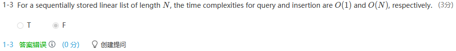

WEEK 2
1.3 Compare the Algorithms
[Example] 最大子序列和
Algorithm 1
int MaxSubsequenceSum ( const int A[ ], int N )
{
int ThisSum, MaxSum, i, j, k;
MaxSum = 0; /* initialize the maximum sum */
for( i = 0; i < N; i++ ) /* start from A[ i ] */
for( j = i; j < N; j++ ) { /* end at A[ j ] */
ThisSum = 0;
for( k = i; k <= j; k++ )
ThisSum += A[ k ]; /* sum from A[ i ] to A[ j ] */
if ( ThisSum > MaxSum )
MaxSum = ThisSum; /* update max sum */
} /* end for-j and for-i */
return MaxSum;
}
Algotithm 2
int MaxSubsequenceSum ( const int A[ ], int N )
{
int ThisSum, MaxSum, i, j;
MaxSum = 0; /* initialize the maximum sum */
for( i = 0; i < N; i++ ) { /* start from A[ i ] */
ThisSum = 0;
for( j = i; j < N; j++ ) { /* end at A[ j ] */
ThisSum += A[ j ]; /* sum from A[ i ] to A[ j ] */
if ( ThisSum > MaxSum )
MaxSum = ThisSum; /* update max sum */
} /* end for-j */
} /* end for-i */
return MaxSum;
}
Algorithm 3 Divide and Conquer 分治法
static int MaxSubSum(const int A[ ], int Left, int Right)
{
int MaxLeftSum, MaxRightSum;
int MaxLeftBorderSum, MaxRightBorderSum;
int LeftBorderSum, RightBorderSum;
int Center, i;
if (Left == Right)
if (A[Left] > 0)
return A[Left];
else
return 0;
Center = (Left + Right) / 2;
MaxLeftSum = MaxSubSum(A, Left, Center);
MaxRightSum = MaxSubSum(A, Center + 1, Right);
MaxLeftBorderSum = 0;
LeftBorderSum = 0;
for (i = Center; i >= Left; i--)
{
LeftBorderSum += A[i];
if (LeftBorderSum > MaxLeftBorderSum)
MaxLeftBorderSum = LeftBorderSum;
}
MaxRightBorderSum = 0;
RightBorderSum = 0;
for (i = Center+1; i <= Right; i++)
{
RightBorderSum += A[i];
if (RightBorderSum > MaxRightBorderSum)
MaxRightBorderSum = RightBorderSum;
}
return Max3(MaxLeftSum, MaxRightSum, MaxLeftBorderSum + MaxRightBorderSum);
}
int MaxSubsequenceSum(const int A[ ], int N)
{
return MaxSubSum(A, 0, N - 1);
}
$$ \because T(N)=2T(\frac N2)+cN\quad T(1)=O(1)\ T(\frac N2)=2T(\frac N {2^2})+c\frac N2\ \cdots\ T(1)=2T(\frac N{2^k})+c\frac N{2^{k-1}}\ \therefore T(N)=2^kT(\frac N{2^k})+kcN=N\cdot O(1)+cN\log N $$ Algorithm 4 On-line Algorithm 在线算法
int MaxSubsequenceSum( const int A[ ], int N )
{
int ThisSum, MaxSum, j;
ThisSum = MaxSum = 0;
for ( j = 0; j < N; j++ ) {
ThisSum += A[ j ];
if ( ThisSum > MaxSum )
MaxSum = ThisSum;
else if ( ThisSum < 0 )
ThisSum = 0;
} /* end for-j */
return MaxSum;
}
- A[ ] is scanned once only. 扫描一次，无需存储（处理streaming data）
- 在任意时刻，算法都能对它已经读入的数据给出子序列问题的正确答案(其他算法不具有这个特性)
1.4 Logrithms in the Running Time
- 如果一个算法用常数时间将问题的大小削减为其一部分(通常是1/2)，那么该算法就是\(O(logN)\)的
[Example] Binary Search
int BinarySearch ( const ElementType A[ ], ElementType X, int N )
{
int Low, Mid, High;
Low = 0; High = N - 1;
while ( Low <= High ) {
Mid = ( Low + High ) / 2;
if ( A[ Mid ] < X )
Low = Mid + 1;
else
if ( A[ Mid ] > X )
High = Mid - 1;
else
return Mid; /* Found */
} /* end while */
return NotFound; /* NotFound is defined as -1 */
}
[Example] Euclid’s Algorithm
int Gcd(int M, int N)
{
int Rem;
while (N > 0)
{
Rem = M % N;
M = N;
N = Rem;
}
return M;
}
[Example] Efficient exponentiation
long int Pow(long int X, int N)
{
if (N == 0) return 1;
if (N == 1) return X;
if (IsEven(N)) return Pow(X*X, N/2);/*return Pow(X, N/2)*Pow(X, N/2) affects the efficiency*/
else return Pow(X*X, N/2)*X; /*return Pow(X, N-1)*X is the same*/
}
1.5 Checking Your Analysis
Method 1
When \(T(N)=O(N)\), check if \(T(2N)/T(N)\approx2\)
When \(T(N)=O(N^2)\), check if \(T(2N)/T(N)\approx4\)
When \(T(N)=O(N^3)\), check if \(T(2N)/T(N)\approx8\)
Method 2
When \(T(N)=O(f(N))\), check if $\lim\limits_{N\rightarrow\infty}\frac{T(N)}{f(N)}\approx C $
2 LIst, Stacks and Queues
2.1 Abstract Data Type(ADT) 抽象数据类型
[Definition] Data Type = {Objects} and {Operations}
[Definition] An Abstract Data Type(ADT) is a data type that is organized in such a way that the specification on the objects and specification of the operations on the objects are separated from the representation of the objects and the implementation on the operations.
2.2 The List ADT
- Objects : N items
- Operations
- Finding the length
- Printing
- Making an empty
- Finding
- Inserting
- Deleting
- Finding next
- Finding previous
Simple Array implementation of Lists
-
Sequential mapping 连续存储，访问快
-
Find_Kth take \(O(1)\) time.
-
MaxSize has to be estimated.
-
Insertion and Deletion not only take \(O(N)\) times, but also involve a lot of data movements which takes time.

Query 查询
Linked Lists
-
Location of nodes may change on differrent runs.
-
Insertion 先连后断
-
Deletion 先连后释放
-
频繁malloc和free系统开销较大
-
Finding take \(O(N)\) times.
/*Return true if L is empty*/
int IsEmpty(List L)
{
return L->Next == NULL;
}
/*Return true if P is the last position in list L*/
/*Parameter L is unused in this implementation*/
int IsLast(Position P, List L)
{
return P->Next == NULL;
}
/*Return Position of X in L; NULL if not found*/
Position Find(Element X, List L)
{
Position P;
P = L->Next;
while (P != NULL && P->Element != X) P = P->Next;
return P;
}
/*Delete first occurence of X from a list*/
/*Assume use of a header node*/
void Delete(ElementType X, List L)
{
Position P, TmpCell;
P = FindPrevious(X, L);
if (!IsLast(P, L))
{
TmpCell = P->Next;
P->Next = TmpCell->Next;
free(TmpCell);
}
}
/*If X is not found, then Next field of returned*/
/*Assumes a header*/
Position FindPrevious(ElementType X, List L)
{
Position P;
P = L;
while (P->Next != NULL && P->Next->Element != X) P = P->Next;
return P;
}
/*Insert (after legal position P)*/
/*Header implementation assumed*/
/*Parameter L is unused in this implementation*/
void Insert(ElementType X, List L, Position P)
{
Position TmpCell;
TmpCell = malloc(sizeof(struct Node));
if (TmpCell == NULL) FatalError("Out of space!")
TmpCell->Element = X;
TmpeCell->Next = P->Next;
P->Next = TmpCell;
}
void DeleteList(List L)
{
Position P, Tmp;
P = L->Next;
L->Next = NULL;
while (P != NULL)
{
Tmp = P->Next;
free(P);
P = Tmp;
}
}
Doubly Linked Circular Lists
- Finding take \(O(\frac N 2)\) times.

The correct answer is D.
Two Applications
-
The Polynomial ADT
-
Objects :
-
Operations :
- Finding degree
- Addition
- Subtraction
-
Multiplication
-
Differentiation
-
[Representation 1]
typedef struct {
int CoeffArray [ MaxDegree + 1 ] ;
int HighPower;
} *Polynomial ;
/*将多项式初始化为零*/
void ZeroPolynomial(Polynomial Poly)
{
int i;
for(i = O; i <= MaxDegree; i++)
Poly->CoeffArray[ i ] = O;
Poly->HighPower = O;
}
/*两个多项式相加*/
void AddPolynomial(const Polynomial Poly1, const Polynomial Poly2, Polynomial PolySum)
{
int i;
ZeroPolynomial(PolySum);
PolySum->HighPower = Max(Poly1->HighPower, Poly2->HighPower);
for (i = PolySum->HighPower; i >= O; i--)
PolySum->CoeffArray[ i ] = Poly1->CoeffArray[ i ] + Poly2->CoeffArray[ i ];
}
void MultPolynomial(const Polynomial Poly1, const Polynomial Poly2, Polynomial PolyProd)
{
int i, j;
ZeroPolynomial (PolyProd);
PolyProd->HighPower = Poly1->HighPower + Poly2->HighPower;
if(PolyProd->HighPower > MaxDegree)
Error("Exceeded array size");
else
for(i = O; i <= Poly1->HighPower; i++)
for(j = O; j <= Poly2->HighPower; j++)
PolyProd->CoeffArray[ i + j ] += Poly1->CoeffArray[ i ] * Poly2->CoeffArray[ j ];
}
- [Representation 2]
typedef struct poly_node *poly_ptr;
struct poly_node{
int Coefficient; /* assume coefficients are integers */
int Exponent;
poly_ptr Next;
};
typedef poly_ptr a; /* nodes sorted by exponent */
-
只存储非零项
-
Multilists
Cursor Implementation of Linked Lists(no pointer)

#blender エイサー・パルマタム || Acer Palmatum - selescha.arts的插画 - pixiv